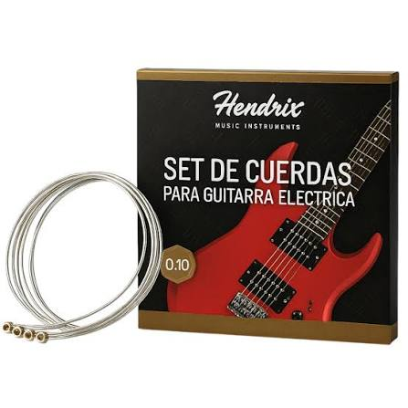

Por qué las cuerdas nuevas suenan distinto

Cualquiera que haya cambiado las cuerdas de su guitarra lo ha notado: el instrumento suena más brillante, con más presencia en los agudos. No es imaginación.
Qué le pasa al metal
Las cuerdas están hechas de acero, níquel o bronce, según el tipo. Con el uso acumulan grasa de los dedos, sudor y polvo en las ranuras del entorchado. Ese material amortigua la vibración y apaga los armónicos altos, que son los que dan el brillo característico.
Además, el metal sufre fatiga: cada vez que la cuerda vibra, se deforma microscópicamente. Con el tiempo pierde elasticidad y la afinación se vuelve inestable, especialmente en los trastes altos.
Cada cuánto cambiarlas
- Uso diario intenso: cada 2 a 4 semanas
- Uso frecuente (varias veces por semana): cada 2 a 3 meses
- Uso ocasional: cada 6 meses, aunque no se hayan cortado
Cómo alargar su vida
Lavarse las manos antes de tocar y pasar un paño seco por las cuerdas al terminar hace una diferencia real. En climas húmedos como el de la costa, guardar la guitarra en su estuche evita la oxidación acelerada.
Volver a blogs